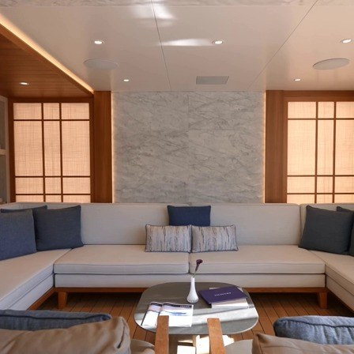
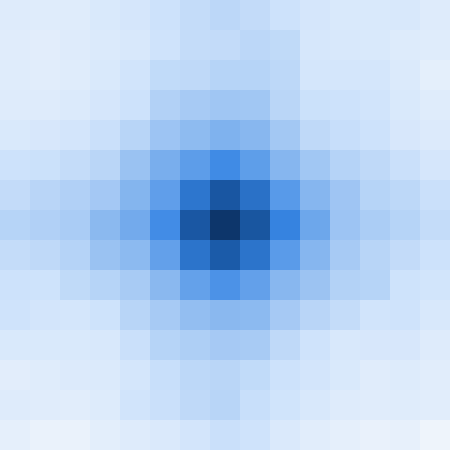
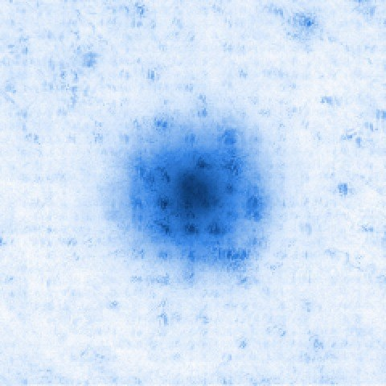
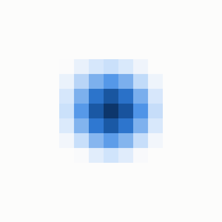
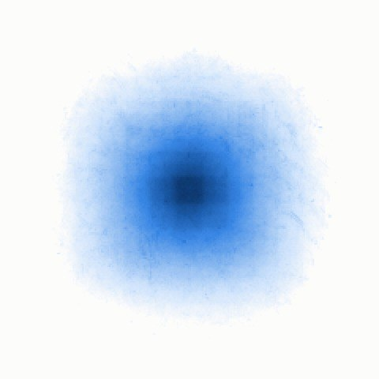
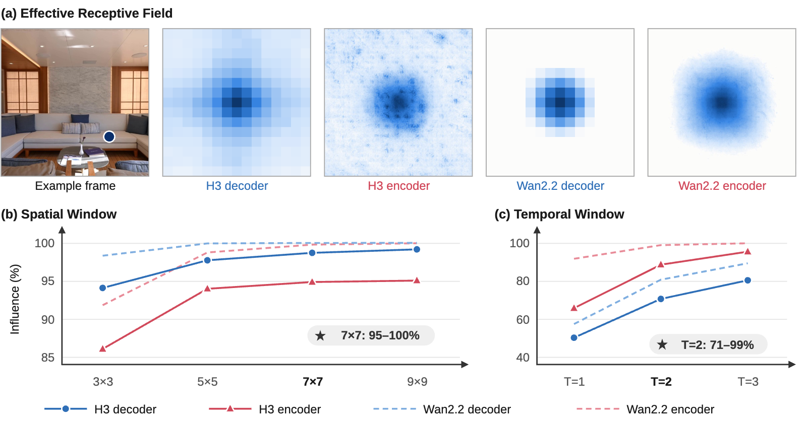

- 5.2–6.2×faster encoding than the official MiniMax-H3 VAE
- 3.0–3.3×faster decoding, with higher PSNR
- 13.4×speedup with our inference infrastructure, with almost no quality loss
Abstract
LiveVAE uses local attention to stream video in the pretrained latent space.
Read the abstract
While video diffusion models have grown faster and increasingly streamable, the video VAE remains a primary latency bottleneck across interactive generation and editing pipelines. Existing VAEs and their acceleration methods rely mainly on heavy convolutions or full frame attention, and most focus only on decoding, leaving encoding costly for streaming conditional generation and editing. This raises a natural question: Do video VAE encoding and decoding actually require such global spatiotemporal modeling? By analyzing the effective receptive fields of pretrained video VAEs, we find that both encoding and decoding a patch rely almost entirely on its spatial and temporal neighbors. To exploit this strong locality, we introduce LiveVAE, a streaming encoder and decoder built on causal window attention, which cuts per frame compute while keeping the temporal KV cache bounded for streaming. Decoupled encoder/decoder distillation followed by joint finetuning preserves the pretrained latent space, making LiveVAE a drop-in replacement for the original VAE. On MiniMax-H3, LiveVAE achieves 5.2–6.2× faster encoding and 3.0–3.3× faster decoding than the official VAE with higher PSNR. Paired with our dedicated inference infrastructure, LiveVAE pushes the speedup to 13.4× with almost no quality loss. Code and models will be released.
Locality in Pretrained Video VAEs
A 7 × 7 window captures 95–100% of the influence. Two frames capture 71–99%.


Influence on the probed latent, MiniMax-H3 decoder. Darker is stronger.H3 decoder94.1%

H3 encoder86.0%

Wan2.2 decoder98.3%

Wan2.2 encoder91.8%
7 × 7 window: 95–100% of the influence
Fill height: share of the influence that comes from each latent frame.
Two frames: 71–99% of the influence
Paper figure

Method
A two frame attention window keeps the KV cache bounded in both the encoder and the decoder.
ℓ is the log of the softmax normalizer (logsumexp of the scores).
Architecture and training
Distill the encoder and decoder separately, then finetune them jointly in the pretrained latent space.

Results
Loading examples…
Efficiency
A Attention windows
B Inference optimizations
- A
- Attention fusion
- B
- Region-wise compilation
- C
- FP8 feed-forward layers with QAT
BibTeX
@article{an2026livevae,
title = {LiveVAE: Causal Window Attention Makes Efficient Streaming Video VAE},
author = {An, Jiachen and Zhao, Sijie and Li, Le and Liu, Hongyu and Li, Zhiyuan and
Yang, Tianyu and Kong, Xiaoyu and Cai, Xunliang and Zhang, Yong and
Pun, Chi-Man and Wei, Xiaoming and Cun, Xiaodong},
journal = {arXiv preprint},
year = {2026}
}